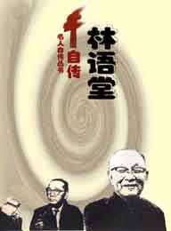

|
|
|  |
喜欢的答应了。从一方面着想，这是为我的多过于为人的；一个人要自知其思想和经验究竟 是怎样的，最好不过是拿起纸笔一一写下来。从另一方面着想，自传不过是一篇自己所写的 扩大的碑铭而已。中国文人，自陶渊明之《五柳先生传》始，常好自写传略，藉以遣兴。如 果这一路的文章涵有乖巧的幽默，和相当的“自知之明”，对于别人确是一种可喜可乐的读 品。我以为这样说法，很足以解释现代西洋文坛自传之风气。作自传者不必一定是夜郎自大 的自我主义者，也不一定是自尊过甚的，写自传的意义只是作者为对于自己的诚实计而已。 如果他恪守这一原则，当能常令他人觉得有趣，而不至感到作者的生命是比其同人较为重要 的了。 |
|
|
||
| 一、少之时 | 二、乡村的基督教 | 三、在学校的生活 |
| 四、与西方文明初次的接触 | 五、宗 教 | 六、游学之年 |
| 七、由北平到汉口 | 八、著作和读书 | 九、无穷的追求 |
|
|
||
| 第01章 一捆矛盾 | 第02章 童 年 | 第03章 与西洋的早期接触 |
| 第04章 圣约翰大学 | 第05章 我的婚姻 | 第06章 哈佛大学 |
| 第07章 法国乐魁索城 | 第08章 殷内镇和莱比锡大学 | 第09章 论幽默 |
| 第10章 三十年代 | 第11章 论美国 | 第12章 论年老—人生自然的节奏 |
| 第13章 精查清点 | ||
|
|
||
| 第一辑 我的信仰 | 第二辑 关于幽默 | 第三辑 我的工作 |
| 第四辑 我的生活 | 第五辑 海外萍踪 | |
| 后记 |